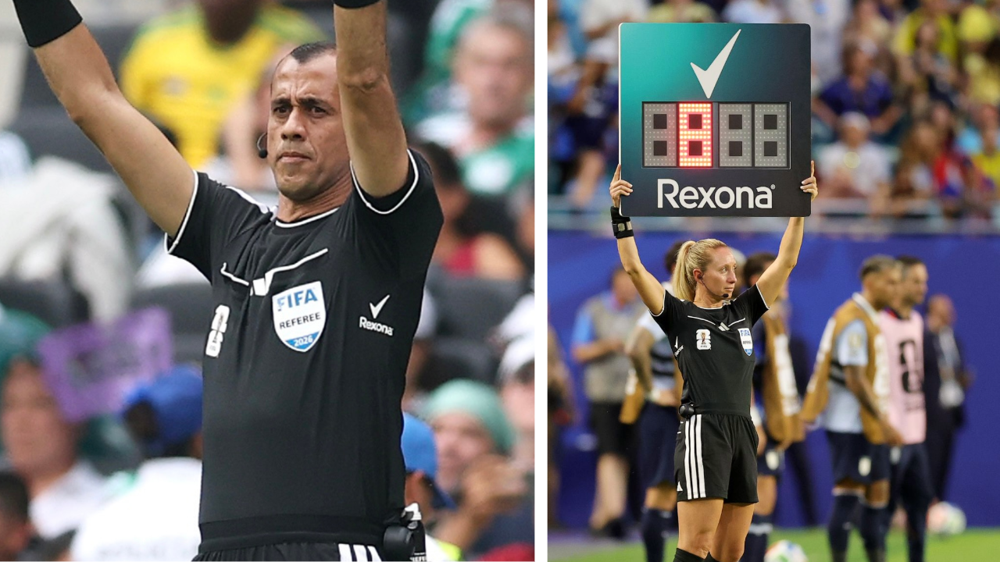
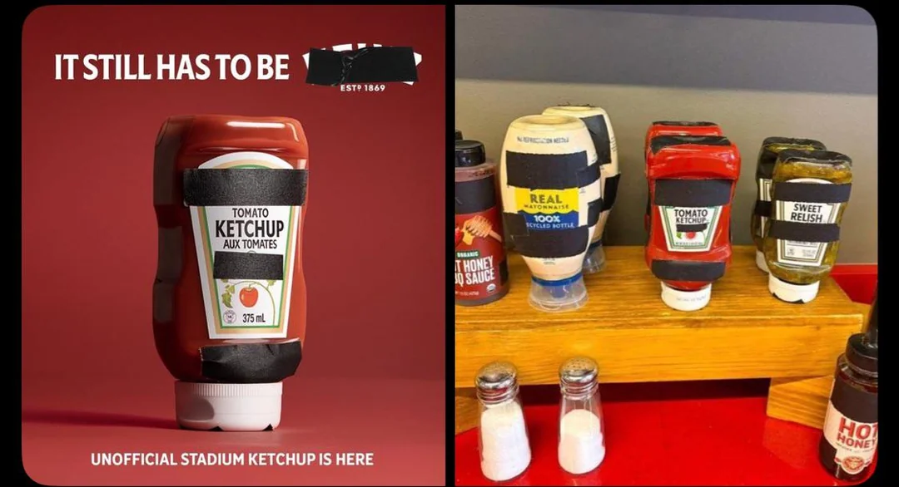
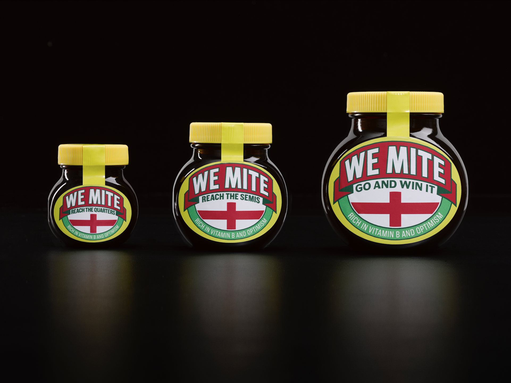

An analysis of how recognisable visual assets, behavioural psychology, and cultural moments transform simple ideas into powerful brand experiences.
The latest selection of standout work from Famous Campaigns suggests that the most memorable advertising often says the least.
Rather than relying on lengthy copy or elaborate storytelling, many of the strongest campaigns place their faith in something more powerful: instantly recognisable visual assets.
Rexona's activation during the FIFA World Cup 2026 is almost disarmingly simple. By placing its unmistakable checkmark on referees' underarms, the brand inserts itself into one of football's most emotionally charged moments: the announcement of stoppage time.
The genius lies not in forcing attention but in borrowing it. Fans aren't looking for advertising; they're anxiously waiting to see how many minutes remain. Rexona quietly piggybacks on that anticipation, ensuring its branding arrives at precisely the moment emotions peak.

Behavioural science suggests that repeated exposure doesn't simply improve recall: it breeds familiarity, and familiarity often becomes preference. By the time shoppers find themselves standing in front of the deodorant shelf, Rexona already feels like the obvious choice.
The campaign isn't trying to persuade in the moment; it's laying mental breadcrumbs weeks before the purchase.
It's difficult to imagine a media placement that's closer to the point of perspiration.
Heinz found itself in an unusual position after FIFA taped over non-sponsor logos on condiment bottles. Rather than treating the tape as an obstacle, the brand embraced it. Ironically, hiding the logo only proved how little the logo mattered.
The bottle's silhouette, proportions and colour palette have become so distinctive that our brains effortlessly complete the missing information. It's a textbook example of what psychologists call pattern completion: we instinctively fill in familiar gaps.
I caught myself doing exactly this while making a tuna sandwich. I reached for the mayonnaise and, before I'd even registered the label, my first thought was, "Is this Heinz?" It wasn't. But that fleeting assumption says more about the brand's visual equity than any awareness survey ever could.

Marmite takes a different route by turning optimism into a purchasing decision. Fans choose between three jar sizes depending on how far they believe England will progress.
On paper, consumers are simply choosing between different sizes. In reality, they're choosing the version of themselves they'd rather be.
Buying the smallest jar quietly signals doubt. The biggest jar, meanwhile, becomes a declaration of faith.

Although each campaign approaches the challenge differently, they're all solving the same problem. Modern consumers encounter thousands of commercial messages every day, making persuasion increasingly difficult.
The strongest campaigns therefore do not fight for attention through complexity. They create symbols that audiences already understand, then attach themselves to moments where emotion, memory, and recognition are naturally heightened.
In a world overflowing with messages, visibility alone is no longer enough. The brands that win are those that become impossible to overlook.